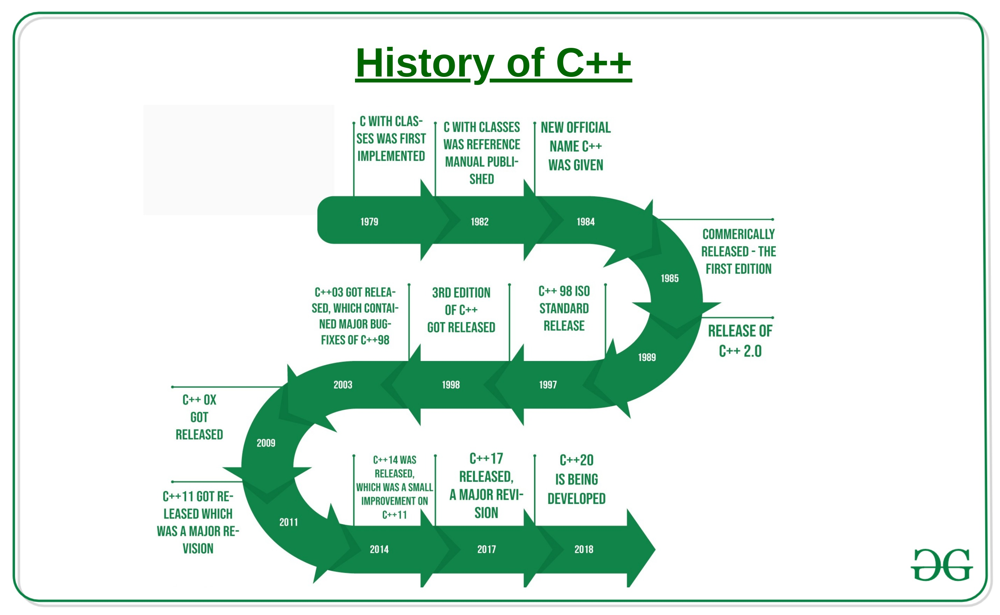

Let us dive in to the world of C++

C++ is a popular programming language.
C++ is used to create computer programs, and is one of
the most
used language in game development.
One of the most popular operating systems Windows also
has a number of its components coded in C++ due to its
features some of which are as follows:
Fast Speed
Versatility
Closer to the Hardware
Building projects is one of the best ways to
learn C++. It provides valuable practical experience
that enables us to make use of the concepts we learned
to make something productive.